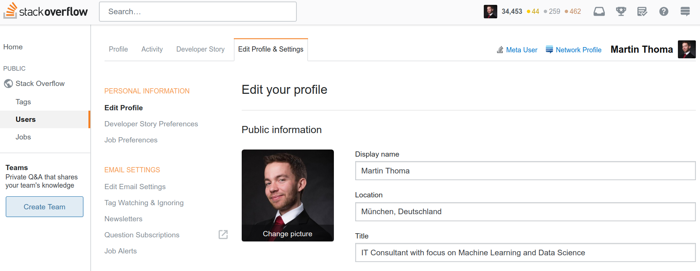

Usernames are used for identification in two places in web services: To let people log in and to allow people to recognize each other. In this article, I want to share some ideas on usernames.
Username vs Display name
When I look into my Stack Overflow profile, they have something called "display name":
{kind=link}

I like this a lot. It communicates clearly that it is something seen by others.
The next question that popped into my mind was if we need usernames at all. Wouldn't it be simpler to just log in with your password?
Two big problems with that idea:
- People might choose the same passwords
- Systems could allow multiple accounts and you might want to have autocompletion
This means we definitely need a username for logging in.
Display name restrictions
Is it a good idea to let people completely freely choose their username from any sequence of Unicode characters?
The problems I see with that:
- Design: People might choose names that break something. It's hard to have a nice design with a component that could grow arbitrarily.
- A minimum length might be desirable to make sure one can click on the name (at least one non-whitespace character)
- Identity theft: Think of the following usernames
Obamavs0bamavsObamа: Char 1072- Messing around with whitespace in the beginning / end of a name
- Messing around with control characters
- See Unicode Confusables
- Script injection: By allowing
<and>an attacker could choose a username which loads HTML. - Interactions: Users interact. For example, in discussions they might
naturally write
@martinto mention the usermartin. This means an@character should be excluded. - Markdown: Other characters like
#[]=*~are also a bad choice as they are part of Markdown. - Math:
$is a bad choice as it triggers MathJax / LaTeX. - Natural separators: Some characters are natural separators in English,
German and French: Whitespace, Comma
,, Semicolon;, dot., colon: - Offensive Language: Actually, the main problem I see here is when developers try to be smart and have a false positive - seeing something as offensive which is just the name of a person.
Where you might want freedom:
- Multiple character sets for multi-country support (Cyrillic, Arabic, Chinese, ...)
What others do
| Service | Min | Max | Charset | Strip | Other |
|---|---|---|---|---|---|
| Twitter (Display Name) | 1 | 50 | Unicode | yes | |
| Stack Overflow (Display Name) | 3 | 30 | letters, digits, spaces, apostrophes, hyphens | yes | must start with a letter or digit |